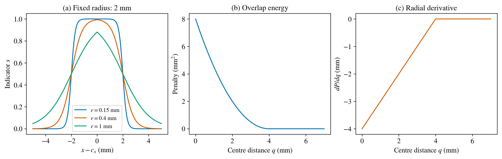

Representing particles and testing their geometry¶
The unknowns¶
Consider a circular stiff particle with centre \(\mathbf c=(c_x,c_y)\) and radius \(r\). Its geometry is described by three numbers. For three particles, the parameter vector has nine entries:
Coordinates and radii have units of length. Material contrasts, loading, boundary conditions, mesh and observation times are prescribed in a geometry recovery. If any of these are also unknown, they must be added to the problem statement and sensitivity analysis.
Moving a material field on a fixed mesh¶
A sharp indicator switches from zero to one at the particle boundary. When that boundary passes a mesh point, the nodal material assignment jumps. A smooth indicator offers a different parameterisation:
The transition width \(\varepsilon\) has units of length. At distance \(r\), \(s=1/2\). One possible stiffness field is
where \(\kappa_E>1\) describes a stiff particle. The physical mesh stays fixed; the material values change as the centre moves. This differs from remeshing a sharp geometric boundary. The transition width is part of the model and must be reported.
Let \(q=\|\mathbf x-\mathbf c\|\). Differentiating the sigmoid gives \(\partial s/\partial r=s(1-s)/\varepsilon\) and, for \(q>0\), \(\nabla_{\mathbf c}s=s(1-s)(\mathbf x-\mathbf c)/(\varepsilon q)\). These formulas explain where geometric sensitivity comes from. It is concentrated near the transition, where \(s(1-s)\) is largest. A material derivative still has to pass through equilibrium and the observation loss before it becomes a useful inverse-update direction.
The sigmoid smooths the interface. The Euclidean norm still has a directional ambiguity exactly at the centre. A code that regularises that distance must document its formula and test the centre separately.
{kind=link}

Figure 3 Original teaching calculations: smooth indicators across a circular particle, overlap energy and its radial derivative. The material curves are analytic, not simulated crack fields.¶
For several particles, a bounded union is \(s_{\mathrm{union}}=1-\prod_i(1-s_i)\). Overlapping transition regions need an explicit material-mixture rule; adding indicators can exceed one.
Separation does not identify the particles¶
An overlap penalty discourages two circles from occupying the same region. For two equal-radius particles, let \(q=\|\mathbf c_1-\mathbf c_2\|\). A simple teaching energy is
For \(0<q<2r\), \(P'(q)=q-2r\). At \(q>2r\), the energy and gradient are zero. The penalty enforces geometric plausibility; it supplies no measurement of the true particle positions.
At coincident centres, the Euclidean distance has no unique direction of increase. An autodiff library can return a finite zero subgradient. Thus the code can be numerically finite while providing no separating direction. A declared, target-independent perturbation of duplicate initial centres is one possible remedy. Changing the penalty is another modelling choice that needs its own test.
Exercise 1: predict the transition¶
(a) What is \(s\) at the centre, at the stated radius and far outside it? (b) Sketch what happens when \(\varepsilon\) doubles. (c) Explain why changing \(\varepsilon\) merely to obtain a nicer crack picture would change the inverse problem.
Worked solution
At the centre the value is \(1/(1+e^{-r/\varepsilon})\), close to one when \(r/\varepsilon\) is large. At the radius it is exactly one half; far outside it approaches zero. Doubling the width broadens the transition and changes the spatial stiffness distribution. The forward response and sensitivities therefore change, even though the nominal centre and radius stay fixed.
Exercise 2: interpret the coincidence test¶
The retained check finds a finite zero gradient for two coincident centres. Does this establish that the overlap problem is solved? Propose a test with a very small, prescribed separation and compare the direction of the update.
Worked solution
No. The overlap energy is positive. The zero vector supplies no direction in which to move. A small separation removes the directional ambiguity and the negative gradient moves the centres apart. This is a geometry test; it gives no evidence that a fracture observation can localise either particle.
Exercise 3: a geometry checklist¶
Check positive radii, admissible centres, minimum separation, field bounds, permutation invariance and finite gradients. Check the complete circles, not only their centres, against the specimen boundary.
Worked checklist
For a rectangular plate, require each centre to remain at least its radius from every edge. Swapping particle labels should leave the union unchanged. Test finite derivatives at the centre, near the interface and outside the particle. An overlap check is separate from the measurement residual.
The ADL4P sphere-packing exercise motivates this diagnostic. Our plate is nonperiodic; a circle leaving one edge does not re-enter at the opposite edge.